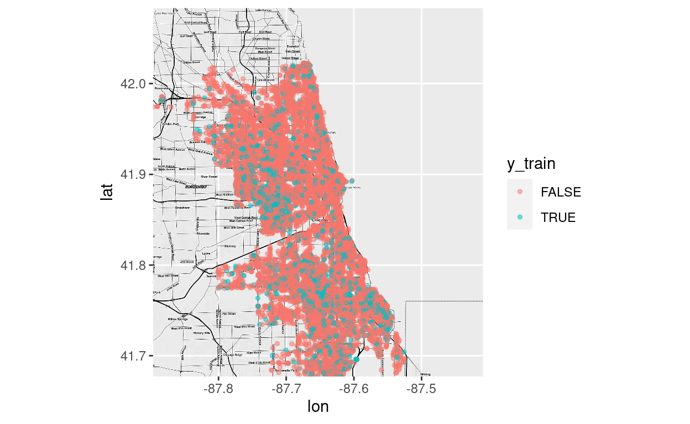
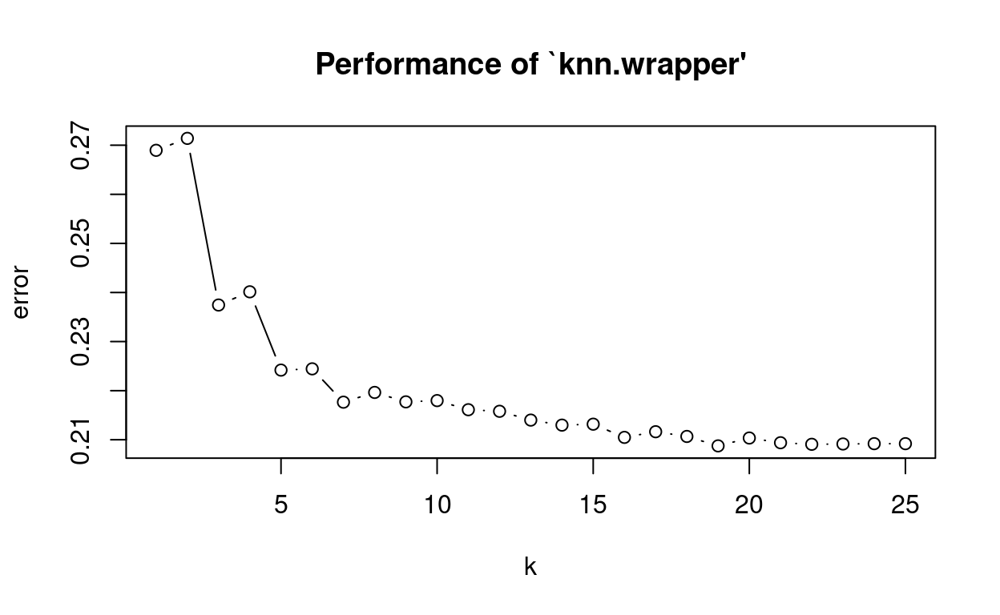
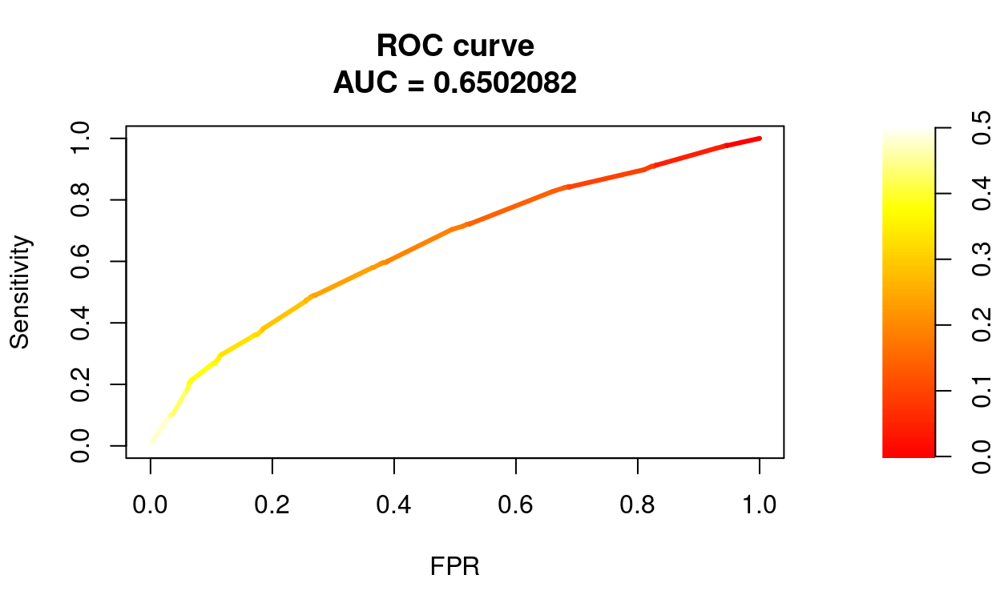
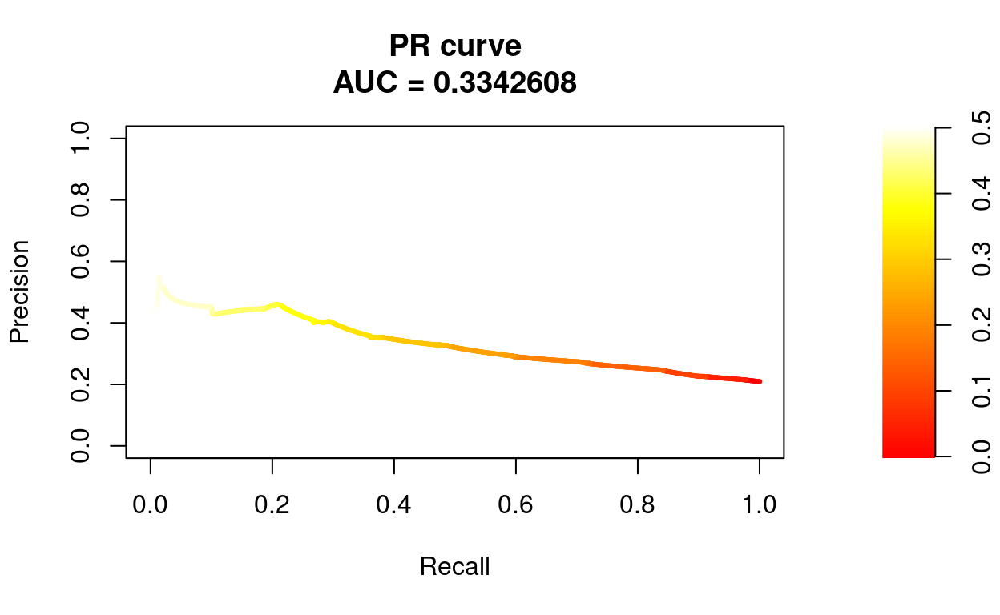

# devtools::install_github("dkahle/ggmap")
library(RSocrata)
library(ggplot2)
library(ggmap)
library(e1071)
library(class)
library(caret)
library(PRROC)
library(pROC)For this notebook we use data on incidents of crime in the City of Chicago. This data “… is extracted from the Chicago Police Department’s CLEAR (Citizen Law Enforcement Analysis and Reporting) system.” It contains a number of basic information about each crime incident, such as date, location, type and whether there was an arrest. Here we only pull in data from January 2018.
Source: https://data.cityofchicago.org/Public-Safety/Crimes-2001-to-present/ijzp-q8t2
ccj2018 <- read.socrata("https://data.cityofchicago.org/resource/6zsd-86xi.json?$where=date between '2018-01-01' and '2018-01-31'")
#str(ccj2018)
head(ccj2018)names(ccj2018)## [1] "id" "case_number" "date"
## [4] "block" "iucr" "primary_type"
## [7] "description" "location_description" "arrest"
## [10] "domestic" "beat" "district"
## [13] "ward" "community_area" "fbi_code"
## [16] "x_coordinate" "y_coordinate" "year"
## [19] "updated_on" "latitude" "longitude"
## [22] "location.type" "location.coordinates" "location_address"
## [25] "location_city" "location_state" "location_zip"Some quick data preparation since most variables seem to be of type character by default. We also exclude cases with missing values.
ccj2018$arrest <- as.factor(ccj2018$arrest)
ccj2018$latitude <- as.numeric(ccj2018$latitude)
ccj2018$longitude <- as.numeric(ccj2018$longitude)
ccj2018 <- subset(ccj2018, complete.cases(ccj2018[,c(9,20,21)]))Next, we split the data into a train and test set.
set.seed(765)
train <- sample(1:nrow(ccj2018), 0.8*nrow(ccj2018))
c_train <- ccj2018[train,]
c_test <- ccj2018[-train,]In addition, we also need X and y data frames for both data pieces as input for knn(). In the next sections, the outcome will be arrest and we use (only) latitude and longitude as features.
X_train <- ccj2018[train,c(20,21)]
X_test <- ccj2018[-train,c(20,21)]
y_train <- ccj2018[train,9]
y_test <- ccj2018[-train,9]A quick look at our outcome variable.
summary(y_train)## FALSE TRUE
## 12393 3219summary(y_test)## FALSE TRUE
## 3062 841As a nice illustration of our prediction problem, we can use qmap() to build a map of Chicago and then plot the crime incidents colored by arrest on top.
bbox <- c(left = -87.896805, bottom = 41.677015, right = -87.409286, top = 42.082936)
map <- get_stamenmap(bbox = bbox, zoom = 12, maptype = "toner-hybrid")
map <- ggmap(map)map +
geom_point(data = X_train, aes(x = longitude, y = latitude, color = y_train), size = 1, alpha = 0.5) ## Warning: Removed 318 rows containing missing values (geom_point).
In order to find a useful kNN setup, we tune k using 10-Fold Cross-Validation. This can be done e.g. with tune.knn().
set.seed(761)
tune <- tune.knn(X_train, y_train, k = 1:25, tunecontrol = tune.control(sampling = "cross"), cross = 10)
summary(tune)##
## Parameter tuning of 'knn.wrapper':
##
## - sampling method: 10-fold cross validation
##
## - best parameters:
## k
## 24
##
## - best performance: 0.2086221
##
## - Detailed performance results:
## k error dispersion
## 1 1 0.2659477 0.012809183
## 2 2 0.2684476 0.006990799
## 3 3 0.2344990 0.009302742
## 4 4 0.2339226 0.007466228
## 5 5 0.2225850 0.005880372
## 6 6 0.2238021 0.007708171
## 7 7 0.2171404 0.007111151
## 8 8 0.2146428 0.006206443
## 9 9 0.2140665 0.006845178
## 10 10 0.2146435 0.008153074
## 11 11 0.2134263 0.010696565
## 12 12 0.2144513 0.009583510
## 13 13 0.2115047 0.008920761
## 14 14 0.2122092 0.009150368
## 15 15 0.2106719 0.008869935
## 16 16 0.2119531 0.008293165
## 17 17 0.2097750 0.008496285
## 18 18 0.2102234 0.010300381
## 19 19 0.2098395 0.010824227
## 20 20 0.2088783 0.011562574
## 21 21 0.2102876 0.011665796
## 22 22 0.2105438 0.012035033
## 23 23 0.2090067 0.010842198
## 24 24 0.2086221 0.011418188
## 25 25 0.2088146 0.012080441plot(tune)
Seems like k = 21 is a good choice. We pass this information to knn(), together with X from the test data. Note that the resulting object are the test set predictions, since with kNN there is no separate model to be stored.
y_knn <- knn(X_train, X_test, y_train, k = 21, prob = TRUE)We can also add a logistic regression model for comparison, although this is unlikely to perform well given the prediction task at hand.
logit <- glm(arrest ~ latitude + longitude, data = c_train, family = binomial)
summary(logit)##
## Call:
## glm(formula = arrest ~ latitude + longitude, family = binomial,
## data = c_train)
##
## Deviance Residuals:
## Min 1Q Median 3Q Max
## -0.8764 -0.7070 -0.6512 -0.5791 2.0038
##
## Coefficients:
## Estimate Std. Error z value Pr(>|z|)
## (Intercept) -135.2410 29.5933 -4.570 4.88e-06 ***
## latitude -2.8019 0.2752 -10.181 < 2e-16 ***
## longitude -2.8645 0.3904 -7.336 2.19e-13 ***
## ---
## Signif. codes: 0 '***' 0.001 '**' 0.01 '*' 0.05 '.' 0.1 ' ' 1
##
## (Dispersion parameter for binomial family taken to be 1)
##
## Null deviance: 15889 on 15611 degrees of freedom
## Residual deviance: 15779 on 15609 degrees of freedom
## AIC: 15785
##
## Number of Fisher Scoring iterations: 4Given the logit object, we can generate predicted risk scores for the test set and transform those into predicted classes. Note that we are using an arbitrary classification threshold (0.5), which might not be the best option.
yp_logit <- predict(logit, newdata = c_test, type = "response")
y_logit <- as.factor(ifelse(yp_logit > 0.5, "TRUE", "FALSE"))Now we can inspect the prediction performance of kNN and the logit model using confusionMatrix() from caret, which can be used to (also) display a lot of performance measures, given predicted classes.
confusionMatrix(y_knn, y_test, mode = "everything", positive = "TRUE")## Confusion Matrix and Statistics
##
## Reference
## Prediction FALSE TRUE
## FALSE 2963 712
## TRUE 99 129
##
## Accuracy : 0.7922
## 95% CI : (0.7791, 0.8048)
## No Information Rate : 0.7845
## P-Value [Acc > NIR] : 0.1251
##
## Kappa : 0.1646
##
## Mcnemar's Test P-Value : <2e-16
##
## Sensitivity : 0.15339
## Specificity : 0.96767
## Pos Pred Value : 0.56579
## Neg Pred Value : 0.80626
## Precision : 0.56579
## Recall : 0.15339
## F1 : 0.24135
## Prevalence : 0.21548
## Detection Rate : 0.03305
## Detection Prevalence : 0.05842
## Balanced Accuracy : 0.56053
##
## 'Positive' Class : TRUE
## confusionMatrix(y_logit, y_test, mode = "everything", positive = "TRUE")## Warning in confusionMatrix.default(y_logit, y_test, mode = "everything", :
## Levels are not in the same order for reference and data. Refactoring data to
## match.## Confusion Matrix and Statistics
##
## Reference
## Prediction FALSE TRUE
## FALSE 3062 841
## TRUE 0 0
##
## Accuracy : 0.7845
## 95% CI : (0.7713, 0.7973)
## No Information Rate : 0.7845
## P-Value [Acc > NIR] : 0.5092
##
## Kappa : 0
##
## Mcnemar's Test P-Value : <2e-16
##
## Sensitivity : 0.0000
## Specificity : 1.0000
## Pos Pred Value : NaN
## Neg Pred Value : 0.7845
## Precision : NA
## Recall : 0.0000
## F1 : NA
## Prevalence : 0.2155
## Detection Rate : 0.0000
## Detection Prevalence : 0.0000
## Balanced Accuracy : 0.5000
##
## 'Positive' Class : TRUE
## Additionally, ROC and PR curves are helpful for evaluating prediction performance with categorical outcomes. Here we could (e.g.) use the PRROC package. As an example, we only consider the knn model.
First, get predicted risk scores.
yp_knn <- 1 - attributes(y_knn)$probThen, create helper objects…
pc <- yp_knn[y_test == "TRUE"]
nc <- yp_knn[y_test == "FALSE"]…that can be passed to roc.curve() (see ?roc.curve).
roc <- roc.curve(scores.class0 = pc, scores.class1 = nc, curve = T)Finally, we can print and plot the resulting roc object.
roc##
## ROC curve
##
## Area under curve:
## 0.6511959
##
## Curve for scores from 0 to 0.5
## ( can be plotted with plot(x) )plot(roc, scale.color = heat.colors(100))
Same for PR curve.
pr <- pr.curve(scores.class0 = pc, scores.class1 = nc, curve = T)
pr##
## Precision-recall curve
##
## Area under curve (Integral):
## 0.3362386
##
## Area under curve (Davis & Goadrich):
## 0.3362385
##
## Curve for scores from 0 to 0.5
## ( can be plotted with plot(x) )plot(pr, scale.color = heat.colors(100))
Try to calculate precision at top 100, i.e. the expected precision when classifying the 100 test incidents with the highest risk scores as being arrests (TRUE). For this, we need to create a new prediction vector. The function order() might be helpful here.
yp <- data.frame(yp_knn, y_test)
yp <- yp[order(-yp_knn),]
yp$yt_knn <- "FALSE"
yp[1:100,]$yt_knn <- "TRUE"Next, compute the precision given the new predicted classes and y_test.
precision(as.factor(yp$yt_knn), yp$y_test, relevant = "TRUE")## [1] 0.45In the previous plots, we have seen that performance measures such as sensitivity and specificity are highly dependent on the underlying classification threshold. Therefore, lets try to find a threshold that satisfies some optimality criterion, instead of simply using 0.5. For this purpose, we have to create another roc object for the knn result, now using the pROC package.
roc2 <- roc(y_test, yp_knn)## Setting levels: control = FALSE, case = TRUE## Setting direction: controls < casesroc2##
## Call:
## roc.default(response = y_test, predictor = yp_knn)
##
## Data: yp_knn in 3062 controls (y_test FALSE) < 841 cases (y_test TRUE).
## Area under the curve: 0.6512This package provides the function coords(), which can be used for threshold optimization (see ?coords). Note that in an actual application, we couldn’t use the test set for this purpose, so another hold-out set would be needed.
knn_t <- coords(roc2, x = "best", best.method = "closest.topleft", best.weights = c(1, 0.2))## Warning in coords.roc(roc2, x = "best", best.method = "closest.topleft", : The
## 'transpose' argument to FALSE by default since pROC 1.16. Set transpose = TRUE
## explicitly to revert to the previous behavior, or transpose = TRUE to silence
## this warning. Type help(coords_transpose) for additional information.knn_tWe can now use this new threshold to predict class membership.
y_knn2 <- as.factor(ifelse(yp_knn > unlist(knn_t[1]), "TRUE", "FALSE"))And finally build a confusion matrix using the predicted classes from above.
confusionMatrix(y_knn2, y_test, mode = "everything", positive = "TRUE")## Confusion Matrix and Statistics
##
## Reference
## Prediction FALSE TRUE
## FALSE 2519 522
## TRUE 543 319
##
## Accuracy : 0.7271
## 95% CI : (0.7129, 0.7411)
## No Information Rate : 0.7845
## P-Value [Acc > NIR] : 1.00
##
## Kappa : 0.2002
##
## Mcnemar's Test P-Value : 0.54
##
## Sensitivity : 0.37931
## Specificity : 0.82266
## Pos Pred Value : 0.37007
## Neg Pred Value : 0.82835
## Precision : 0.37007
## Recall : 0.37931
## F1 : 0.37463
## Prevalence : 0.21548
## Detection Rate : 0.08173
## Detection Prevalence : 0.22086
## Balanced Accuracy : 0.60099
##
## 'Positive' Class : TRUE
##